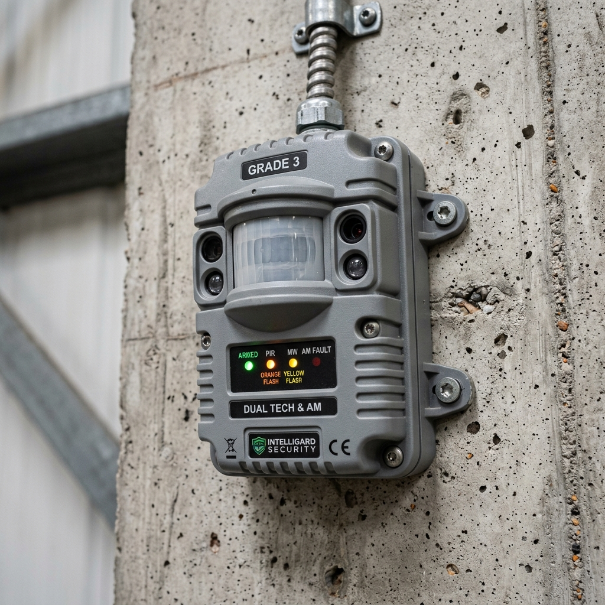

Advanced Intruder Anti-Masking: 2026 Grade 3 Dual-Tec & Diagnostic Polling

1. Executive Summary: The Defeat of Sensor Bypassing
Protecting high-risk commercial real estate, financial vaults, pharmaceutical repositories, and high-value logistics warehouses requires deploying intrusion detection systems capable of combating highly sophisticated threat actors. In legacy Grade 2 alarm architectures, commercial motion detectors relied on basic Passive Infrared (PIR) sensing. These early sensors proved highly vulnerable to covert, pre-attack sabotage—a vulnerability known as "Masking."
During normal business operating hours when the alarm panel is disarmed, a threat actor posing as a legitimate customer, delivery driver, or maintenance contractor could covertly apply a piece of clear adhesive tape, a spray of transparent lacquer, a cardboard shield, or a smear of petroleum jelly directly over the optical window of a hallway motion detector. Because legacy sensors lacked self-diagnostic supervision, the alarm panel registered no anomaly. When the facility was locked and armed at night, the masked detector was completely blinded to infrared thermal radiation, allowing the threat actor to breach the facility and move freely through the protected zone without triggering an alarm.
```
+------------------------+-----------------------------------+-----------------------------------+
| Security Parameter | Legacy Grade 2 PIR Sensor | 2026 Grade 3 Dual-Tec Anti-Mask |
+------------------------+-----------------------------------+-----------------------------------+
| Primary Sensing Engine | Passive Infrared (PIR) Only | Dual-Tec: PIR + K-Band Microwave |
| Anti-Masking Protection| None (Highly vulnerable to tape) | Active Active-Infrared (AIR) Beams|
| Cloak Detection Logic | Blind to thermally shielded suits | Microwave Doppler Frequency Shift |
| Wiring Supervision | Basic Normally Closed (NC) Loop | Triple End-of-Line (TEOL) Resistors|
| Regulatory Compliance | European EN 50131 Grade 2 | European EN 50131 Grade 3 Mandate |
+------------------------+-----------------------------------+-----------------------------------+
```
This comprehensive architectural guide establishes the definitive 2026 engineering standards for advanced Grade 3 intruder anti-masking and diagnostic polling. Security directors, lead system integrators, and infrastructure architects will explore the advanced active infrared physics, microwave Doppler mechanics, and End-of-Line (EOL) supervision disciplines required to deploy tamper-proof commercial intrusion grids capable of defeating the most sophisticated physical bypass attempts.
2. Active Active-Infrared (AIR) Anti-Masking Physics
The defining technological defense mechanism of 2026 Grade 3 motion detectors is the integration of Active Active-Infrared (AIR) anti-masking optical systems designed to continuously supervise the physical integrity of the detector's external lens.
```
+-------------------------------------------------------------------+
| Active Active-Infrared (AIR) Anti-Masking Optical Physics |
+-------------------------------------------------------------------+
| |
| [ AIR Emitter Diode ] ---> ( Pulsed IR Beam ) |
| | |
| [ External Sensor Lens ] |
| | |
| +-- ( Reflected IR Energy ) --+ ( Covert Masking Tape ) |
| v |
| [ AIR Receiver Diode ] |
| * Diagnostic Action: IR reflection exceeds threshold -> MASK ALARM *
+-------------------------------------------------------------------+
```
AIR Emitter & Receiver Diode Supervision Matrix
Modern Grade 3 commercial sensors (such as the Hikvision commercial Tri-X series or Honeywell DT8000 series) feature an internal array of specialized active infrared emitter and receiver diodes positioned directly behind the detector's optical window. The emitter diodes continuously pulse invisible streams of infrared light outward through the lens. In a pristine, unmasked environment, this light radiates out into the room, and the internal receiver diodes detect near-zero reflection.
However, if a threat actor applies any physical substance over the exterior lens—such as clear packing tape, cardboard, black spray paint, or clear lacquer—the pulsed infrared light strikes the masking material and reflects aggressively back into the detector. The internal AIR receiver diodes instantly capture this intense optical reflection.
Diagnostic Polling & Anti-Mask Relay Latching
To prevent false anti-masking alarms triggered by passing insects or temporary environmental dust, the sensor's internal microprocessor executes rigorous diagnostic polling. When an abnormal IR reflection is detected, the sensor initiates an internal verification timer (typically `20 to 30 seconds`). If the masking material remains static across the lens for the duration of the polling window, the microprocessor decisively verifies a masking attack.
```
+------------------------+-----------------------------------+-----------------------------------+
| Masking Material Type | Physical Masking Mechanism | Active AIR Diagnostic Resolution |
+------------------------+-----------------------------------+-----------------------------------+
| Clear Adhesive Tape | Blocks PIR thermal wave entry | Triggers AIR Reflection Threshold |
| Transparent Lacquer | Forms solid IR-blocking barrier | Triggers AIR Reflection Threshold |
| Cardboard / Paper Box | Physically occludes sensor view | Triggers AIR Reflection Threshold |
| Anti-Mask Spray Paint | Absorbs IR / Blinds optical lens | Triggers AIR Absorption Threshold |
+------------------------+-----------------------------------+-----------------------------------+
```
Crucially, Grade 3 standards mandate that an anti-masking alarm must operate entirely independently of the primary intrusion detection relay. The sensor contains a dedicated, solid-state Anti-Mask Relay wired directly to a 24-hour dedicated supervisory zone on the main alarm control panel.
When a mask is verified, the anti-mask relay latches open instantly, triggering a priority tamper alarm at the central central monitoring station regardless of whether the main alarm system is armed or disarmed. The relay remains structurally latched open until the masking material is physically removed and a technician executes a formal reset sequence.
3. Dual-Technology (PIR + Microwave) Cloak Detection Algorithms
While active anti-masking protects the sensor from physical blinding, defeating advanced intruders during an active break-in requires pairing Passive Infrared with high-frequency Microwave Doppler sensing—a mechanical architecture known as Dual-Technology (Dual-Tec).
```
+-------------------------------------------------------------------+
| Dual-Technology (PIR + Microwave) AND/OR Alarm Logic Workflow |
+-------------------------------------------------------------------+
| |
| [ Approaching Intruder ] |
| | |
| +--> [ PIR Sensor ] -------> ( Thermal Delta Detected? ) |
| | | |
| +--> [ Microwave Sensor ] -> ( Doppler Shift Detected? ) |
| | |
| [ Microprocessor AND Gate ] |
| | |
| ( BOTH CONFIRMED ) |
| | |
| * ACTION: FIRE INTRUSION RELAY * |
+-------------------------------------------------------------------+
```
K-Band Microwave Doppler Frequency Shifts
Passive Infrared (PIR) sensors operate by detecting the rapid movement of body heat (infrared thermal energy, typically `9.4µm wavelength`) across alternating optical zones created by the detector's internal Fresnel lens. However, PIR sensors possess an inherent vulnerability: if ambient room temperatures rise to match human body temperature (`~37°C / 98.6°F`), the thermal delta drops to zero, severely degrading PIR detection sensitivity.
To eliminate this vulnerability, Grade 3 Dual-Tec sensors integrate a high-frequency K-Band (`24 GHz`) or X-Band (`10.525 GHz`) microwave transceiver. The microwave module continuously broadcasts an invisible field of electromagnetic energy throughout the protected room. When an intruder moves through this field, the electromagnetic waves bounce off the moving body and return to the sensor at a shifted frequency—a fundamental physical phenomenon known as the Doppler Effect.
Defeating Thermal Cloaking Suits
In high-stakes commercial burglaries, professional threat actors frequently attempt to bypass PIR sensors by wearing specialized thermal cloaking suits, heavy neoprene diving gear, or holding up insulated metallic foil blankets designed to completely trap and suppress escaping body heat.
```
+------------------------+-----------------------------------+-----------------------------------+
| Intruder Bypass Tactic | PIR Sensor Independent Response | Dual-Tec Microwave Resolution |
+------------------------+-----------------------------------+-----------------------------------+
| Thermal Cloaking Suit | Blind (Suppresses thermal delta) | ALARM (Captures Doppler shift) |
| Insulated Foil Shield | Blind (Reflects internal heat) | ALARM (Captures Doppler shift) |
| Extreme Room Heat (37C)| Degraded (Zero thermal delta) | ALARM (Maintains Doppler polling) |
| Umbrella / Cardboard | Blind (Blocks IR wave entry) | ALARM (Penetrates non-metallic) |
+------------------------+-----------------------------------+-----------------------------------+
```
Against a Grade 3 Dual-Tec sensor, thermal cloaking tactics fail catastrophically. While the insulated suit successfully blinds the PIR element, it is completely incapable of stopping microwave Doppler reflection. The sensor's internal microprocessor runs advanced Cloak Detection Algorithms.
Under normal operational conditions, the sensor utilizes "AND" logic, requiring both the PIR and Microwave sensors to trigger simultaneously to fire an alarm (dramatically reducing false alarms). However, if the microwave module detects a massive, unambiguous Doppler frequency shift characteristic of a moving human body while the PIR sensor registers zero thermal delta, the microprocessor instantly identifies a thermal cloaking attack, overrides the "AND" gate, and fires the primary intrusion relay.
4. Triple End-of-Line (TEOL) Resistance Supervision (EN 50131-1)
Securing the physical communication wiring connecting peripheral Grade 3 sensors back to the main commercial alarm panel requires replacing basic normally closed loops with Triple End-of-Line (TEOL) resistance supervision.
```
+-------------------------------------------------------------------+
| Triple End-of-Line (TEOL) Resistance Supervision Wiring Topology |
+-------------------------------------------------------------------+
| |
| [ Commercial Alarm Panel Zone 1 ] |
| | |
| |-- ( 4-Wire Loop ) |
| | |
| [ Grade 3 Dual-Tec Anti-Mask Sensor ] |
| | |
| +--> [ Resistor 1: 1kΩ ] ( wired across Alarm Relay ) |
| +--> [ Resistor 2: 1kΩ ] ( wired across Tamper Switch ) |
| +--> [ Resistor 3: 1kΩ ] ( wired across Anti-Mask Relay ) |
| |
| * Diagnostic Benefit: Panel distinguishes Alarm, Tamper, & Mask *|
+-------------------------------------------------------------------+
```
Eliminating Covert Wire Shorting Sabotage
In legacy Grade 1 and Grade 2 alarm installations, sensors were frequently wired utilizing simple Normally Closed (NC) dry contacts without End-of-Line resistors. A sophisticated threat actor could easily detach a hallway sensor, strip the outer cable jacket, and solder a permanent jumper wire across the active alarm loop. This covert short circuit permanently froze the alarm panel zone in a "closed/secure" state, allowing the intruder to physically smash the detector off the wall without triggering an alarm.
```
+------------------------+-----------------------------------+-----------------------------------+
| Measured Zone Resistance| Underlying Physical Sensor State | Alarm Panel Diagnostic Action |
+------------------------+-----------------------------------+-----------------------------------+
| exactly 1,000 Ohms (1k)| Normal / Secure / Door Closed | Normal Operation (Zone Secure) |
| exactly 2,000 Ohms (2k)| Main Intrusion Relay Open (ALARM) | Triggers Full Intrusion Alarm |
| exactly 3,000 Ohms (3k)| Anti-Mask Relay Open (MASK ATTACK)| Triggers 24/7 Priority Mask Alarm |
| Infinite Ohms (Open) | Physical Wire Cut / Tamper Open | Triggers 24/7 Priority Tamper Alarm|
| exactly 0 Ohms (Short) | Covert Wire Jumper Sabotage | Triggers 24/7 Priority Tamper Alarm|
+------------------------+-----------------------------------+-----------------------------------+
```
2026 Grade 3 commercial standards strictly mandate Triple End-of-Line (TEOL) resistance supervision in accordance with European standard EN 50131-1. Technicians install three precision resistors (typically `1kΩ / 1kΩ / 1kΩ`) directly inside the motion detector's housing, wired in series and parallel across the Alarm Relay, Tamper Switch, and Anti-Mask Relay.
ADC Diagnostic Voltage Polling
The commercial alarm panel continuously polls the sensor loop utilizing a highly precise Analog-to-Digital Converter (ADC) measuring exact return voltage drops. By analyzing the precise resistance value of the loop, the panel achieves absolute diagnostic clarity over the sensor's physical state.
If the loop measures exactly `1kΩ`, the panel registers a secure, normal state. If the detector trips an intrusion alarm, the alarm relay opens, adding the second resistor to the loop (`total 2kΩ`), triggering a standard burglary alarm. If an anti-masking attack occurs, the anti-mask relay opens (`total 3kΩ`), triggering a dedicated masking alert.
Crucially, if a threat actor attempts to short the wires together (`0Ω`) or cut the cable (`Infinite Ω`), the panel instantly identifies the severe resistance deviation from the certified baseline, bypasses all disarm delays, and triggers an immediate, priority 24-hour tamper alarm.
5. Comprehensive Expert Frequently Asked Questions
What is the exact difference between Grade 2 and Grade 3 motion detectors under European standard EN 50131?
Grade 2 motion detectors are designed for commercial properties with moderate security risks, utilizing basic Passive Infrared (PIR) sensing and standard End-of-Line (EOL) wiring supervision, making them vulnerable to sophisticated bypass techniques. Grade 3 motion detectors are engineered for high-risk commercial environments (such as jewelers, financial vaults, and armories) under European standard EN 50131. Grade 3 sensors mandate Dual-Technology (PIR + Microwave) sensing, active active-infrared (AIR) anti-masking protection, cloak detection algorithms, and Triple End-of-Line (TEOL) resistance supervision, providing absolute immunity against covert physical masking, thermal cloaking, and wire tampering sabotage.
How do active active-infrared (AIR) anti-masking sensors detect clear adhesive tape applied over the lens?
Grade 3 commercial motion detectors feature an internal array of specialized active infrared emitter and receiver diodes positioned directly behind the detector's optical window. The emitter diodes continuously pulse invisible streams of infrared light outward through the lens. Under normal conditions, this light radiates into the room with near-zero reflection. If a threat actor applies clear adhesive tape, transparent lacquer, or cardboard over the lens, the pulsed infrared light strikes the masking material and reflects aggressively back into the detector. The internal AIR receiver diodes capture this intense reflection, verify the mask via diagnostic polling timers, and instantly latch open a dedicated 24-hour anti-mask relay.
How do Grade 3 Dual-Tec sensors utilize microwave Doppler shifts to defeat thermal cloaking suits?
Passive Infrared (PIR) sensors detect moving body heat, making them vulnerable to professional intruders wearing specialized thermal cloaking suits or holding insulated metallic foil blankets designed to trap escaping body heat. Grade 3 Dual-Tec sensors integrate a high-frequency K-Band (`24 GHz`) microwave transceiver that broadcasts an invisible electromagnetic field. When an intruder moves through this field, the waves bounce off the moving body and return at a shifted frequency (the Doppler Effect). If the sensor's internal microprocessor detects a massive, unambiguous microwave Doppler shift characteristic of human movement while the PIR element registers zero thermal delta, it identifies a cloaking attack, overrides standard "AND" logic, and fires the alarm relay.
Why is Triple End-of-Line (TEOL) resistance supervision mandatory for Grade 3 alarm installations?
In legacy alarm installations, sensors were wired using simple normally closed contacts without resistors. An intruder could detach a sensor, strip the cable, and solder a permanent jumper wire across the active loop, covertly freezing the zone in a secure state and allowing them to smash the detector without triggering an alarm. Grade 3 standards mandate Triple End-of-Line (TEOL) resistance supervision. Technicians install three precision resistors (`1kΩ / 1kΩ / 1kΩ`) inside the detector across the Alarm, Tamper, and Mask relays. The panel continuously measures exact loop resistance; any attempt to short the wires (`0Ω`) or cut the cable (`Infinite Ω`) instantly triggers an immediate 24-hour tamper alarm.
What is the operational function of diagnostic polling timers before latching an anti-masking alarm?
To prevent false anti-masking alarms triggered by passing insects, temporary airborne dust, or a facility manager momentarily leaning a box against a hallway sensor, Grade 3 motion detectors execute rigorous diagnostic polling. When an abnormal active infrared reflection or absorption is detected across the lens, the sensor's internal microprocessor initiates an internal verification timer (typically `20 to 30 seconds`). The sensor continuously polls the optical window; if the masking obstruction is removed within the timer window, the event is dismissed. An anti-masking alarm is latched open exclusively when the physical obstruction remains static across the lens for the entire duration of the polling window.